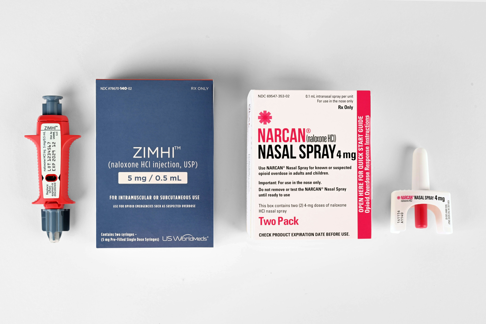
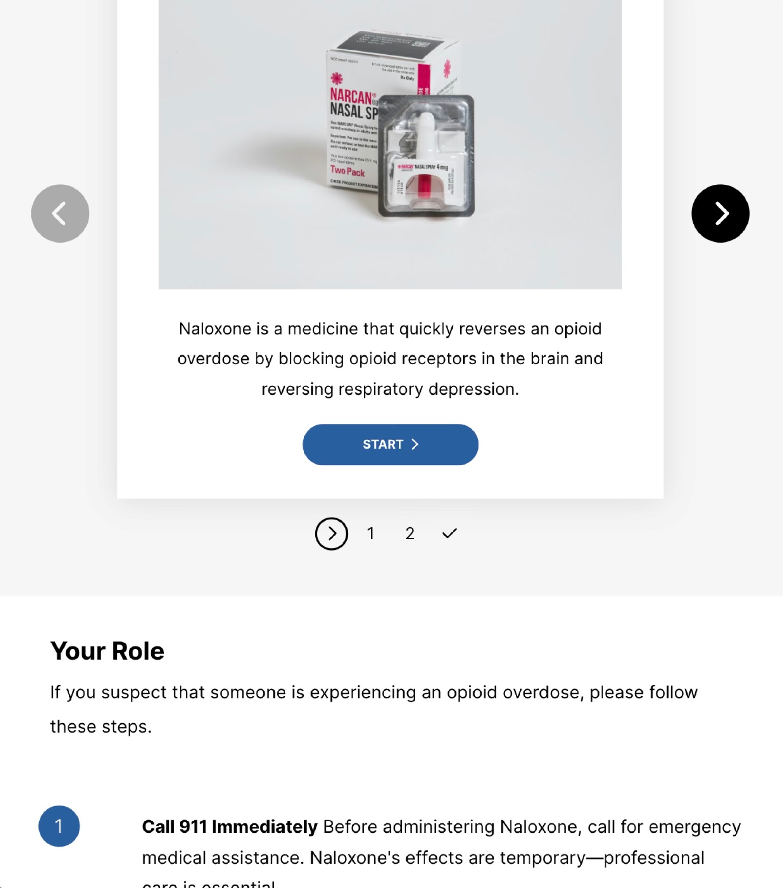
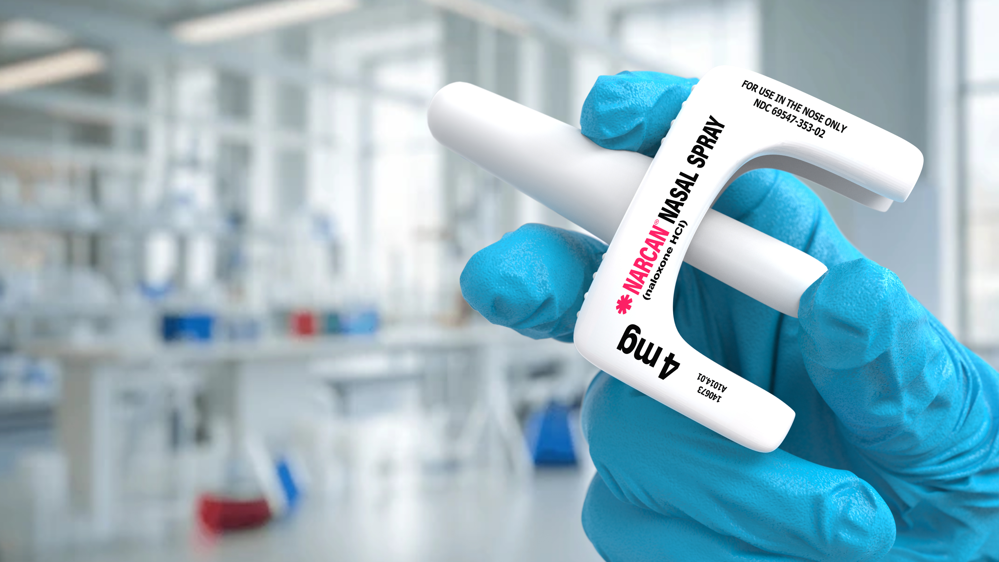

Naloxone (Narcan®) Emergency Response Training
Overview
Imagine encountering someone you suspect is experiencing an opioid overdose. In that critical moment, your swift action with Naloxone (Narcan ®) can mean the difference between life and death. Many professionals have faced this exact situation. Opioid overdose emergencies often strike suddenly in settings like schools, clinics, and community centers. To ensure safety, professionals must be prepared to respond decisively and confidently. Existing resources have not always been enough. True preparedness comes from equipping professionals not only with the procedural skills to administer Naloxone, but also with strategies to prevent overdoses in the first place.
Audience and Context
This training course built in Rise empowers professionals working in public settings with the vital knowledge and skills to recognize overdose symptoms and administer Naloxone effectively.
Client
Independent Project
Timeline
2-Week Sprint (Oct 2025)
Tools
Articulate Rise 360
Synthesia
GitHub
Skills
- • eLearning Development
- • Content Strategy
- • Project Management
Identifying Critical Knowledge Gaps
When it comes to saving lives, it is essential that this course closes the right gap for learners. Critical knowledge gaps were identified through a comprehensive needs assessment, guiding targeted improvements in course content.
Research Activities
- • Interview with one SME
- • Reviewed CDC, SAMHSA, and public health overdose prevention guidelines
- • Analyzed existing Naloxone training programs to identify content gaps
Key Insights
- • Learners need both recognition skills and procedural knowledge
- • Crisis situations require clear, memorable protocols
- • Identified need for universal (non-organization-specific) training
Audience Characteristics
- • Wide range of comfort levels with medical content
- • Limited professional development time
- • Diverse learning preferences and technology proficiency levels
Key Training Challenges and Solutions
Making Medical Content Accessible
Findings highlight the need to differentiate course content to learners who have limited or no experience with opioid overdose response, ensuring instruction is accessible and relevant for all participants.
Balancing Medical Accuracy with Accessibility
I collaborated with public health resources (CDC, SAMHSA) to ensure accuracy while using plain language. Avoided medical jargon; when technical terms were necessary (e.g., "respiratory depression"), provided immediate context. Key Consideration: Content must be clear enough for non-medical audiences while maintaining accuracy for emergency response.
Creating Engaging Content for Serious Topic
Accessible, non-medical training that enables staff across multiple sectors (education, corporate, nonprofit) to respond effectively to opioid emergencies.
Limited Time for Comprehensive Training
This course focuses on critical skills (recognize, call 911, administer) while providing resources for deeper learning. Prioritized "need to know" over "nice to know" to respect learners' time.
Approach to Content Strategy
A structured learning progression designed to move users seamlessly from foundational knowledge to critical decision-making and procedural execution.
Awareness
The course builds context by defining what Naloxone is and describing risk factors associated with opioid abuse. It also provides users with information about who can administer, legal protection and additional resources.
Recognition
The course teaches learners how to identify the signs of overdose (critical decision point) through interactive blocks including flash cards.
Procedure
Finally, the course provides learners with procedural steps outlining how to administer Naloxone effectively.
Core Features
Modular, scenario-driven architecture designed for rapid deployment across diverse learning environments.
Universal Design
Flexible training framework customizable for K–12 districts, corporate offices, public libraries, and higher-ed campuses.
Microlearning Modules
Time-agnostic, asynchronous structure allowing learners to complete short units or revisit specific topics on demand.
SME Resource Library
Embedded post-training references including SAMHSA toolkits, harm reduction guides, and video walk-throughs.
Scenario Practice
Low-stakes decision-making scenarios that assess practical real-world application rather than simple rote memorization.
Creating Opioid Safety Experts in the Community

Development Phase
Strategic use of Rise's interactive blocks (tabs, flashcards, process) maintain engagement without trivializing the content.
All content is written using a conversational and empathetic tone in alignment with course goals. This course balances narrative realism through character dialogue to support learner immersion. While building I kept the following goals as my North Star:
- • Intentional use of Rise interactive blocks to enhance engagement while maintaining pedagogical integrity.
- • Continuous assessment and self-evaluation happens within embedded reflection cards, scenario decisions, and rating scales.
- • Purposeful use of Storyline blocks for branching simulations.
Storyboarding & Video
Initially, I created a short training video using Synthesia, an AI-powered video creation tool. While the tool was effective for rapid development, my content lacked the depth of clinical research needed to ensure accuracy and credibility.
I decided instead to incorporate a video developed by SMEs at the Johns Hopkins Bloomberg School of Public Health. This decision not only improved the reliability of my training materials but also modeled the importance of integrating expert-verified content into instructional design projects.
Accessibility Considerations
- • Clear, jargon-free language (8th–grade reading level)
- • Multiple content formats (text, visual, audio)
- • High contrast for readability

Design Decisions & Rationale
Visual Design
Color Palette
Primary color used is professional blue (#1E6BA8) conveying trust, calm authority, and medical professionalism without creating anxiety.
Typography & Layout
Emergency training must be easy to reference under stress. Formatting includes ample white space and key terms are bold and for scanning during review/crisis reference.
Assessment Design
Compliance training requires demonstrated competency. The final assessment prioritizes and emergency protocol, not just knowledge recall and includes 5 questions and an 80% passing threshold (4/5 correct). The 80% threshold ensures learners can apply critical skills while accounting for test anxiety. Variety in questions and question types (multiple choice, true/false, scenario-based) test critical actions, not trivial details.
Results & Impact
Equipping learners with the power to save lives when every second counts.
Symptom Recognition
Increased staff confidence in rapidly recognizing critical opioid overdose symptoms and taking decisive action.
Response Speed
Faster emergency response times achieved by significantly reducing hesitation to administer Naloxone nasal spray.
Harm Reduction
Fostered a broader, empathy-first organizational culture grounded in active harm reduction and peer support.
Summary
This project demonstrates my ability to design accessible, engaging eLearning for high-stakes topics while applying instructional design principles and leveraging authoring tool capabilities strategically.
Future Enhancements
- • Branching Scenario: Learner makes decisions in a simulated overdose situation.
- • Post-training confidence survey to measure behavior change.
- • Follow-up microlearning "refreshers" at 3–month intervals.
Project Strengths & Execution
- → SME Integration: Expert ability to curate and integrate complex medical/CDC guidelines into clean, non-technical learning modules without client hand-holding.
- → Ruthless Prioritization: Focuses strictly on high-impact objectives to deliver rapid, production-ready modules under tight timelines.
- → Universal Design Architecture: Builds flexible, modular content templates that can easily be re-skinned or adapted for multiple client verticals.
Available for short-term contract work (1–6 weeks)
Need custom multimedia or web modules?
I specialize in quick-turnaround production. I build high-fidelity video scripts, interactive scenario elements, and brand-aligned assets built native for your system.